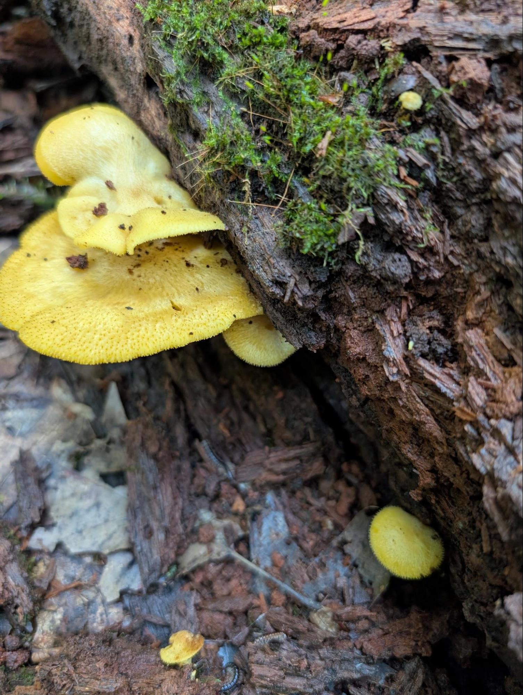

About a week ago, while I was out on an errand (buying a two-wheeler for my three-year-old!), I found myself about five minutes from my most prolific chanterelle spot. Despite it being August, the recent rains, my past success, and everything else in my favor, I came up completely empty-handed.
But on the way back to my van, I came across something interesting: a small group of yellowish gilled mushrooms growing from a well-rotted piece of downed wood.

My first thought was that they were something in the Gymnopilus genus. Before driving home, I fed some pictures to Gemini, who agreed (with caveats and hedging, of course), and spent some of my drive home with Gemini in voice mode, asking it questions about the fascinating alkaloid profile of G. luteus and the various cultural histories of related species.
The entire experience left me with a conclusion that I’ve come to many times before: mushrooms are amazing.
AI Is the Worst Thing for Amateur Mycologists
When I got home, I did what any self-respecting amateur mycologist would do: I took a spore print.
I don’t have data to back this up, but my guess is that the type of person who loves mushrooms is more often than not also the type of person who hates AI for a variety of reasons unrelated to mushrooms.
Regardless of my personal views around AI, the result of the spore print was surprising. It was white. Definitely not Gymnopilus.
Furthermore, since some Gymnopilus species contain psilocybin and other interesting alkaloids, it’s not unreasonable to imagine a less experienced, more adventurous person YOLOing the sample and hoping for a good time, which likely would not have gone well.
I don’t use the word “amateur” lightly, and certainly don’t use it disparagingly. The word comes from the Latin amare, meaning “to love.” I love mushrooms. I have a deep respect for them and their unique chemical constituents.
As an amateur mycologist, my next step was to pull out Michael Kuo’s fantastic Mushrooms of the Midwest, my all-time favorite mushroom book. I diligently went through the keys, from spore color through various morphological features (a process that you could call an analog algorithm).
Nothing matched.
AI Is the Best Thing for Amateur Mycologists
In addition to being an amateur mycologist, I also work with AI professionally, and so have a pretty good idea of how to coax meaningful information from AI systems.
So, with the new spore print in hand, I started a new conversation with a different model, fed it everything I knew, gave it some guidance, and voila: Tricholomopsis sulphureoides.
Interestingly, the most cited source was from Kuo’s own website.
What AI brings to the table is speed in searching across multiple online sources and parsing data beyond the limits of your bookshelf. But human intelligence is the key: AI can search multiple sources and parse vast datasets, but humans can take a spore print.
“AI can search multiple sources and parse vast datasets,
but humans can take a spore print.”
My Takeaway
This shouldn’t be a surprise, but AI, as it pertains to mushroom identification, is basically a “best of times/worst of times” kind of deal. Like I mentioned above, the traditional process of mushroom ID involves a literal algorithm, albeit a simple, analog one, with very simple logic. Something that machines are very good at.
What AI brings to the table is speed in exploring many different possibilities and breadth that goes beyond the limits of your bookshelf. But bringing your human intelligence is the key.
Maybe a bit on the nose, but I think this is another good example of why a human in the loop is a must have for any critical system—especially, to borrow from Vizzini, “when death is on the line!”